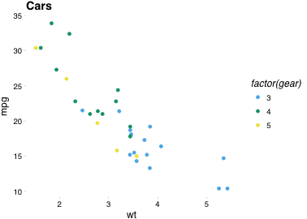
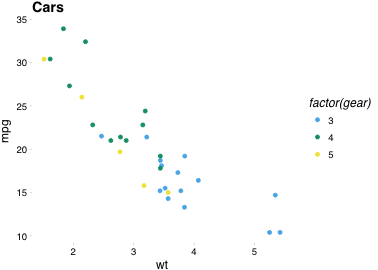
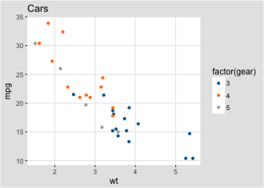
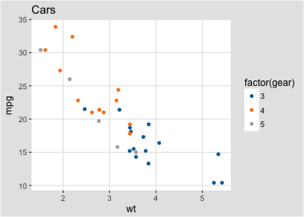

ggplot2
R_ggplot2.Rmdggplot基本用法
创建第一个ggplot
油耗（hwy）与排量之间的关系（displ）是怎样的？
ggplot(data = mpg) + geom_point(mapping = aes(x = displ, y = hwy))

映射图形属性（Aesthetic mappings）
什么是映射
“The greatest value of a picture is when it forces us to notice what we never expected to see.” — John Tukey

#> `geom_smooth()` using formula 'y ~ x'这些离群的红点什么类型的汽车呢？
为了解决这个问题，我们可以引入第三个变量，并通过把它映射到某一图形属性（
aesthetic）图形属性包括点的大小、形状、颜色等等。不同的数值可以映射成不同的属性级别（
level）


分面（Facests）
- 除了图形属性外，分面也可以很好的展示不同类型的变量
-
ggplot中使用facet_*函数来进行分面 - 如果我们按照
class进行分面:
ggplot(data = mpg) + geom_point(mapping = aes(x = displ, y = hwy)) + facet_wrap(~ class, nrow = 2)

- 同样，我们可以对驱动方式和气缸数量进行分面(
facet_gird())
ggplot(data = mpg) + geom_point(mapping = aes(x = displ, y = hwy)) + facet_grid(drv ~ cyl)
图形几何对象（Geometric objects）
什么是几何对象
- 以上两幅图的x轴相同，y轴也相同，所描述的数据也相同，但是两幅图存在明显差异
- 每幅图使用了不同的几何对象（Geometric objects）来描述
- 在
ggplot2的语法中，我们可以说这两幅图用了不同的geoms
Geoms (geom_*)
- 在
ggplot2中，一个geom指的是用来描述数据的一种几何对象 - 不同的
geom就代表了不同类型的图 - 在
ggplot2中替换几何对象十分方便，只需要替换你加到ggplot()的geom函数，比如上图：
# left ggplot(data = mpg) + geom_point(mapping = aes(x = displ, y = hwy)) # right ggplot(data = mpg) + geom_smooth(mapping = aes(x = displ, y = hwy))
-
ggplot2自带了40多种geoms（还记得怎么查看吗，Hint:apropos）
#> [1] "geom_abline" "geom_area" "geom_bar"
#> [4] "geom_bin2d" "geom_blank" "geom_boxplot"
#> [7] "geom_col" "geom_contour" "geom_contour_filled"
#> [10] "geom_count" "geom_crossbar" "geom_curve"
#> [13] "geom_density" "geom_density_2d" "geom_density_2d_filled"
#> [16] "geom_density2d" "geom_density2d_filled" "geom_dotplot"
#> [19] "geom_errorbar" "geom_errorbarh" "geom_freqpoly"
#> [22] "geom_function" "geom_hex" "geom_histogram"
#> [25] "geom_hline" "geom_jitter" "geom_label"
#> [28] "geom_line" "geom_linerange" "geom_map"
#> [31] "geom_path" "geom_point" "geom_pointrange"
#> [34] "geom_polygon" "geom_qq" "geom_qq_line"
#> [37] "geom_quantile" "geom_raster" "geom_rect"
#> [40] "geom_ribbon" "geom_rug" "geom_segment"
#> [43] "geom_sf" "geom_sf_label" "geom_sf_text"
#> [46] "geom_smooth" "geom_spoke" "geom_step"
#> [49] "geom_text" "geom_tile" "geom_violin"
#> [52] "geom_vline"
Geoms (分组)
如果要分组展示不同的数据，怎么办
- 你可以在
aes()中使用group参数 - 将
group设置为你想要的的分类变量即可
ggplot(data = mpg) + geom_smooth(mapping = aes(x = displ, y = hwy, group = drv))
在ggplot2中展示多个geoms
- 如果要在一张图中展示多个
geoms怎么办？ - 可以将多个
geom_*()函数用+连接
ggplot(data = mpg) + geom_point(mapping = aes(x = displ, y = hwy)) + geom_smooth(mapping = aes(x = displ, y = hwy))
mapping继承
- 考虑一下刚刚那段代码：
ggplot(data = mpg) + geom_point(mapping = aes(x = displ, y = hwy)) + geom_smooth(mapping = aes(x = displ, y = hwy))
我们在
geom_point和geom_smooth中分别指定了mapping，但是它们实际上是一样的为了简化代码，我们可以将一系列相同的的
mapping传递给ggplot()，而后续增加的geom_*()会继承这些参数，除非你重新指定：
ggplot(data = mpg, mapping = aes(x = displ, y = hwy)) + geom_point(aes(color = class)) + geom_smooth()
 - 在
- 在geom_*()指定的mapping只会影响当前的geom行为
data继承
- 除了
mapping参数可以继承外，data也是可以继承的 - 如果你不指定新的
data，所有后续的geom_*()都会继承相同的data - 你可以在不同
geom_*()使用不同的data - 在
geom_*()指定的data只会影响当前的geom行为
ggplot(data = mpg, mapping = aes(x = displ, y = hwy)) + geom_point(mapping = aes(color = class)) + geom_smooth(data = filter(mpg, class == "subcompact"), se = FALSE)

统计变换
什么是统计变换
- 柱形图(
geom_bar())

- 柱形图和之前的散点图有什么区别？
- 很多图形，如散点图，展示的数据本身，而有些图形，如柱形图，会计算新的变量并展示：
- 柱形图、直方图等默认会将数据分组（bin）并统计每组内的数据数量
- 平滑线会用模型拟合你的数据并展示预测数据
- 箱形会统计数据分布并展示
stat_*()
-
ggplot2中用来进行统计变换的函数为stat_*() - 下图展示了
geom_bar()通过stat_count()进行统计变换的流程

- 运行
?geom_bar来查看其可以计算的统计量 - 你可以任意使用
stat_*()和geom_*()来绘制相同的图形
ggplot(data = diamonds) + stat_count(mapping = aes(x = cut))

- 每种
geom都有一个默认的stat，每种stat也都对应一个默认的geom
改变默认的统计变换
- 假设你有如下一组数据：
#> # A tibble: 5 x 2
#> cut freq
#> <chr> <dbl>
#> 1 Fair 1610
#> 2 Good 4906
#> 3 Very Good 12082
#> 4 Premium 13791
#> 5 Ideal 21551
- 如何得到每种类别所占的比例？(
prop) vignette("ggplot2-specs")?geom_bar

更复杂的统计
-
ggplot2提供了30种统计变换函数：
#> [1] "stat_bin" "stat_bin_2d" "stat_bin_hex"
#> [4] "stat_bin2d" "stat_binhex" "stat_boxplot"
#> [7] "stat_contour" "stat_contour_filled" "stat_count"
#> [10] "stat_density" "stat_density_2d" "stat_density_2d_filled"
#> [13] "stat_density2d" "stat_density2d_filled" "stat_ecdf"
#> [16] "stat_ellipse" "stat_function" "stat_identity"
#> [19] "stat_qq" "stat_qq_line" "stat_quantile"
#> [22] "stat_sf" "stat_sf_coordinates" "stat_smooth"
#> [25] "stat_spoke" "stat_sum" "stat_summary"
#> [28] "stat_summary_2d" "stat_summary_bin" "stat_summary_hex"
#> [31] "stat_summary2d" "stat_unique" "stat_ydensity"-
stat_summary()描述每个x对应的y特征
ggplot(data = diamonds) + stat_summary( mapping = aes(x = cut, y = depth), fun.ymin = min, fun.ymax = max, fun.y = median ) #> Warning: `fun.y` is deprecated. Use `fun` instead. #> Warning: `fun.ymin` is deprecated. Use `fun.min` instead. #> Warning: `fun.ymax` is deprecated. Use `fun.max` instead.
图形位置（position_*）
如何调整图形的位置
- 如何展示不同clarity的钻石在不同cut中数量？
- 如果你不想要堆积（stack）柱状图，你可以尝试以下4种位置参数：
position = 'fill'position = 'dodge'position = 'dodge2'position = 'identity'


散点图的位置调整
- 还记得第一张散点图吗？

我们的原始数据有234个，但是上图仅显示了126个点，还有109个点去哪里了
它们重叠了（overplotted）
可以采用
position = 'jitter'来改善这个问题
ggplot(data = mpg) + geom_point(mapping = aes(x = displ, y = hwy), position = 'jitter')
坐标系统 (coord_*)
什么是坐标系统
坐标系统是
ggplot2中最为复杂的组件ggplot2中的坐标系统通过coord_*函数进行控制ggplot2中提供的坐标系统有：
#> [1] "coord_cartesian" "coord_equal" "coord_fixed" "coord_flip"
#> [5] "coord_map" "coord_munch" "coord_polar" "coord_quickmap"
#> [9] "coord_sf" "coord_trans"默认的坐标系为笛卡尔坐标系coord_cartesian()
coord_flip()
-
coord_flip()用来翻转x和y轴
ggplot(data = mpg, mapping = aes(x = class, y = hwy)) + geom_boxplot() ggplot(data = mpg, mapping = aes(x = class, y = hwy)) + geom_boxplot() + coord_flip()


coord_quickmap()
-
coord_quickmap()可以用来展示空间数据，如地图等，会自动调整x轴和y轴的比例
nz <- map_data("nz") ggplot(nz, aes(long, lat, group = group)) + geom_polygon(fill = "white", colour = "black") ggplot(nz, aes(long, lat, group = group)) + geom_polygon(fill = "white", colour = "black") + coord_quickmap()

coord_polar()
-
coord_polar()用来画极坐标
bar <- ggplot(data = diamonds) + geom_bar( mapping = aes(x = cut, fill = cut), show.legend = FALSE, width = 1 ) + theme(aspect.ratio = 1) + labs(x = NULL, y = NULL) bar + coord_flip() bar + coord_polar()

标度系统
什么是标度系统
- 标度系统是一组将数据空间转换成几何空间的函数
-
ggplot2中提供了一系列标度函数，均以scale_开头 - 默认的标度函数有：
#> [1] "scale_alpha" "scale_alpha_binned"
#> [3] "scale_alpha_continuous" "scale_alpha_date"
#> [5] "scale_alpha_datetime" "scale_alpha_discrete"
#> [7] "scale_alpha_identity" "scale_alpha_manual"
#> [9] "scale_alpha_ordinal" "scale_color_binned"
#> [11] "scale_color_brewer" "scale_color_continuous"
#> [13] "scale_color_date" "scale_color_datetime"
#> [15] "scale_color_discrete" "scale_color_distiller"
#> [17] "scale_color_fermenter" "scale_color_gradient"
#> [19] "scale_color_gradient2" "scale_color_gradientn"
#> [21] "scale_color_grey" "scale_color_hue"
#> [23] "scale_color_identity" "scale_color_manual"
#> [25] "scale_color_ordinal" "scale_color_steps"
#> [27] "scale_color_steps2" "scale_color_stepsn"
#> [29] "scale_color_viridis_c" "scale_color_viridis_d"
#> [31] "scale_colour_binned" "scale_colour_brewer"
#> [33] "scale_colour_continuous" "scale_colour_date"
#> [35] "scale_colour_datetime" "scale_colour_discrete"
#> [37] "scale_colour_distiller" "scale_colour_fermenter"
#> [39] "scale_colour_gradient" "scale_colour_gradient2"
#> [41] "scale_colour_gradientn" "scale_colour_grey"
#> [43] "scale_colour_hue" "scale_colour_identity"
#> [45] "scale_colour_manual" "scale_colour_ordinal"
#> [47] "scale_colour_steps" "scale_colour_steps2"
#> [49] "scale_colour_stepsn" "scale_colour_viridis_b"默认标度
当你写下：
ggplot(mpg, aes(displ, hwy)) + geom_point(aes(colour = class))
实际上ggplot2会帮你添加一系列默认的标度函数：
ggplot(mpg, aes(displ, hwy)) + geom_point(aes(colour = class)) + scale_x_continuous() + scale_y_continuous() + scale_colour_discrete()
调整默认标度
你可以通过改变标度函数中的默认值来改变标度函数，如：
ggplot(mpg, aes(displ, hwy)) + geom_point() + scale_x_continuous("Label 2")
你也可以更换使用不同的标度函数，如：
ggplot(mpg, aes(displ, hwy)) + geom_point(aes(colour = class)) + scale_x_sqrt() + scale_colour_brewer()
图例
-
ggplot2中图例和坐标轴统称为guides

- 可以采用
guide_legend()来修改图例的样式和内容
base <- ggplot(mpg, aes(drv, fill = factor(cyl))) + geom_bar() base base + guides(fill = guide_legend(ncol = 2)) base + guides(fill = guide_legend(ncol = 2, byrow = TRUE))
override.aes
- 当你的图例需要和图中显示不一样的时候，
override.aes很有用！
base <- ggplot(mpg, aes(displ, hwy, colour = drv)) + geom_point(size = 4, alpha = .2, stroke = 0) base + guides(colour = guide_legend()) base + guides(colour = guide_legend(override.aes = list(alpha = 1)))
主题
theme()
- 主题可以用来调整图中的非数据元素（如：标题、标签、字体、背景、图例等等）
-
ggplot提供了一系列内置的主题函数 - 可以使用
theme()函数来自定义自己的主题 - 有大量的第三方包提供了精美的配色主题
#> function (line, rect, text, title, aspect.ratio, axis.title,
#> axis.title.x, axis.title.x.top, axis.title.x.bottom, axis.title.y,
#> axis.title.y.left, axis.title.y.right, axis.text, axis.text.x,
#> axis.text.x.top, axis.text.x.bottom, axis.text.y, axis.text.y.left,
#> axis.text.y.right, axis.ticks, axis.ticks.x, axis.ticks.x.top,
#> axis.ticks.x.bottom, axis.ticks.y, axis.ticks.y.left, axis.ticks.y.right,
#> axis.ticks.length, axis.ticks.length.x, axis.ticks.length.x.top,
#> axis.ticks.length.x.bottom, axis.ticks.length.y, axis.ticks.length.y.left,
#> axis.ticks.length.y.right, axis.line, axis.line.x, axis.line.x.top,
#> axis.line.x.bottom, axis.line.y, axis.line.y.left, axis.line.y.right,
#> legend.background, legend.margin, legend.spacing, legend.spacing.x,
#> legend.spacing.y, legend.key, legend.key.size, legend.key.height,
#> legend.key.width, legend.text, legend.text.align, legend.title,
#> legend.title.align, legend.position, legend.direction, legend.justification,
#> legend.box, legend.box.just, legend.box.margin, legend.box.background,
#> legend.box.spacing, panel.background, panel.border, panel.spacing,
#> panel.spacing.x, panel.spacing.y, panel.grid, panel.grid.major,
#> panel.grid.minor, panel.grid.major.x, panel.grid.major.y,
#> panel.grid.minor.x, panel.grid.minor.y, panel.ontop, plot.background,
#> plot.title, plot.title.position, plot.subtitle, plot.caption,
#> plot.caption.position, plot.tag, plot.tag.position, plot.margin,
#> strip.background, strip.background.x, strip.background.y,
#> strip.placement, strip.text, strip.text.x, strip.text.y,
#> strip.switch.pad.grid, strip.switch.pad.wrap, ..., complete = FALSE,
#> validate = TRUE)
#> NULL


 
 
 # 总结
# 总结


进阶绘图技巧
patchwork多图组合
要在R中实现一页放多个图，一般使用gridExtra包中的grid.arrange函数或者cowplot包中的plot_grid函数，但是近日Thomas Lin Pedersen又出新作，颠覆了在ggplot2乃至基本包中实现一页多图的最佳方案

patchwork基本用法
patchwork的使用非常简单，只需要将你需要组合的图像用+连接。
library(ggplot2) library(patchwork) p1 <- ggplot(mtcars) + geom_point(aes(mpg, disp)) p2 <- ggplot(mtcars) + geom_boxplot(aes(gear, disp, group = gear)) p1 + p2

patchwork进阶排版
patchwork为任意复杂的布局提供了丰富的支持。请看这个非常易读的代码，它将三个图形嵌套在第四个图形之上:
p3 <- ggplot(mtcars) + geom_smooth(aes(disp, qsec)) p4 <- ggplot(mtcars) + geom_bar(aes(carb)) (p1 | p2 | p3) / p4 #> `geom_smooth()` using method = 'loess' and formula 'y ~ x'

patchwork个性化
标题
patchwork <- (p1 + p2) / p3 patchwork + plot_annotation( title = 'The surprising truth about mtcars', subtitle = 'These 3 plots will reveal yet-untold secrets about our beloved data-set', caption = 'Disclaimer: None of these plots are insightful' ) #> `geom_smooth()` using method = 'loess' and formula 'y ~ x'

patchwork个性化
标签
patchwork + plot_annotation(tag_levels = 'A') #> `geom_smooth()` using method = 'loess' and formula 'y ~ x'


控制图例
使用guides = 'collect'
p1 + p2 + p3 + p4 + plot_layout(guides = 'collect')
控制图例
使用guide_area()控制图例的位置
p1 + p2 + p3 + guide_area() + plot_layout(guides = 'collect')